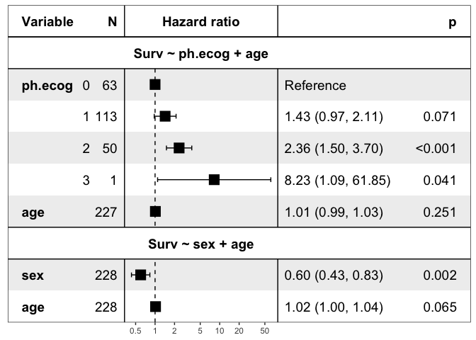

The goal of ezcox is to operate a batch of univariate or multivariate Cox models and return tidy result.
:arrow_double_down: Installation
You can install the released version of ezcox from CRAN with:
install.packages("ezcox")And the development version from GitHub with:
# install.packages("remotes")
remotes::install_github("ShixiangWang/ezcox")It is possible to install ezcox from Conda conda-forge channel:
conda install r-ezcox --channel conda-forgeVisualization feature of ezcox needs the recent version of forestmodel, please run the following commands:
remotes::install_github("ShixiangWang/forestmodel")🔰 Example
This is a basic example which shows you how to get result from a batch of cox models.
library(ezcox)
#> Welcome to 'ezcox' package!
#> =======================================================================
#> You are using ezcox version 0.8.1
#>
#> Github page : https://github.com/ShixiangWang/ezcox
#> Documentation: https://shixiangwang.github.io/ezcox/articles/ezcox.html
#>
#> Run citation("ezcox") to see how to cite 'ezcox'.
#> =======================================================================
#>
library(survival)
# Build unvariable models
ezcox(lung, covariates = c("age", "sex", "ph.ecog"))
#> => Processing variable age
#> ==> Building Surv object...
#> ==> Building Cox model...
#> ==> Done.
#> => Processing variable sex
#> ==> Building Surv object...
#> ==> Building Cox model...
#> ==> Done.
#> => Processing variable ph.ecog
#> ==> Building Surv object...
#> ==> Building Cox model...
#> ==> Done.
#> # A tibble: 3 × 12
#> Variable is_control contrast_level ref_level n_contrast n_ref beta HR
#> <chr> <lgl> <chr> <chr> <int> <int> <dbl> <dbl>
#> 1 age FALSE age age 228 228 0.0187 1.02
#> 2 sex FALSE sex sex 228 228 -0.531 0.588
#> 3 ph.ecog FALSE ph.ecog ph.ecog 227 227 0.476 1.61
#> # … with 4 more variables: lower_95 <dbl>, upper_95 <dbl>, p.value <dbl>,
#> # global.pval <dbl>
# Build multi-variable models
# Control variable 'age'
ezcox(lung, covariates = c("sex", "ph.ecog"), controls = "age")
#> => Processing variable sex
#> ==> Building Surv object...
#> ==> Building Cox model...
#> ==> Done.
#> => Processing variable ph.ecog
#> ==> Building Surv object...
#> ==> Building Cox model...
#> ==> Done.
#> # A tibble: 4 × 12
#> Variable is_control contrast_level ref_level n_contrast n_ref beta HR
#> <chr> <lgl> <chr> <chr> <int> <int> <dbl> <dbl>
#> 1 sex FALSE sex sex 228 228 -0.513 0.599
#> 2 sex TRUE age age 228 228 0.017 1.02
#> 3 ph.ecog FALSE ph.ecog ph.ecog 227 227 0.443 1.56
#> 4 ph.ecog TRUE age age 228 228 0.0113 1.01
#> # … with 4 more variables: lower_95 <dbl>, upper_95 <dbl>, p.value <dbl>,
#> # global.pval <dbl>
lung$ph.ecog = factor(lung$ph.ecog)
zz = ezcox(lung, covariates = c("sex", "ph.ecog"), controls = "age", return_models=TRUE)
#> => Processing variable sex
#> ==> Building Surv object...
#> ==> Building Cox model...
#> ==> Done.
#> => Processing variable ph.ecog
#> ==> Building Surv object...
#> ==> Building Cox model...
#> ==> Done.
mds = get_models(zz)
str(mds, max.level = 1)
#> List of 2
#> $ Surv ~ sex + age :List of 19
#> ..- attr(*, "class")= chr "coxph"
#> ..- attr(*, "Variable")= chr "sex"
#> $ Surv ~ ph.ecog + age:List of 22
#> ..- attr(*, "class")= chr "coxph"
#> ..- attr(*, "Variable")= chr "ph.ecog"
#> - attr(*, "class")= chr [1:2] "ezcox_models" "list"
#> - attr(*, "has_control")= logi TRUE
show_models(mds)
:page_with_curl: Citation
If you are using it in academic research, please cite the preprint arXiv:2110.14232 along with URL of this repo.